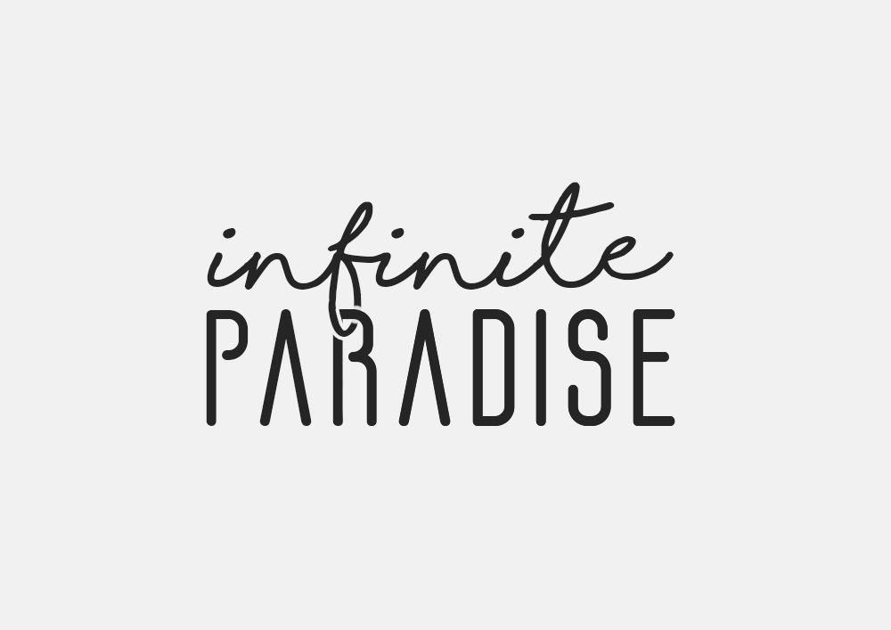
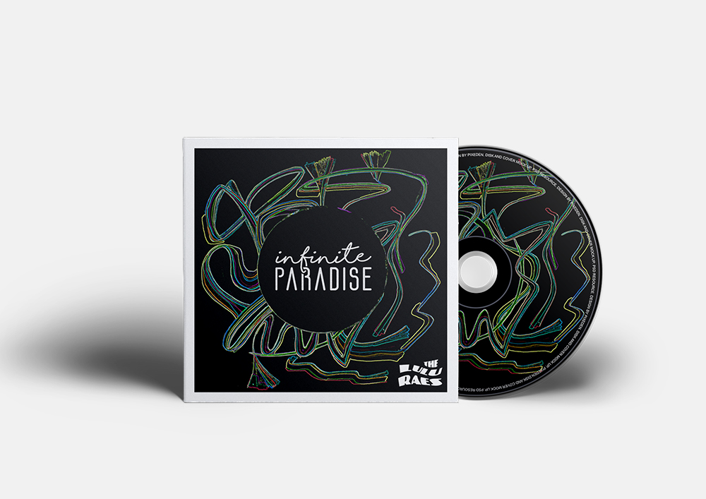
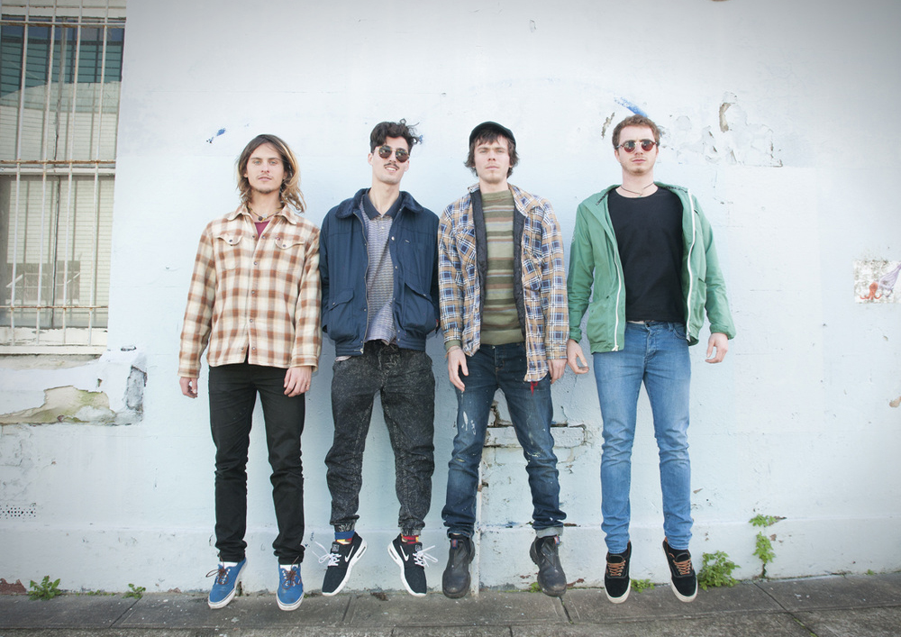

The Lu Lu Raes Single Cover
This was such a fun and inspiring project to work on for Sydney band The LuLu Raes. The band needed some art for their new single 'Infinite Paradise' which reflects the songs sun-soaked, psychedelic, pop tunes. I interpreted the song by using fluid lines and a vibrant array of colours on a black background representing the cosmic universe. Together with the linking and looping typography which highlights the never-ending theme.
Listen here


